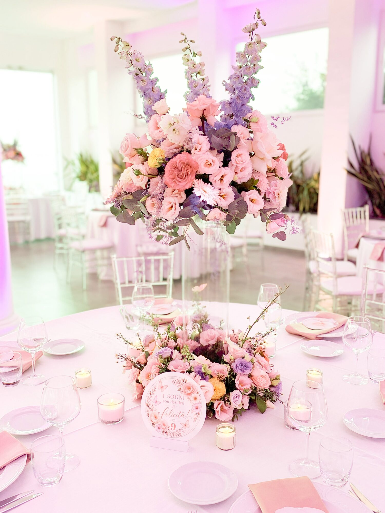
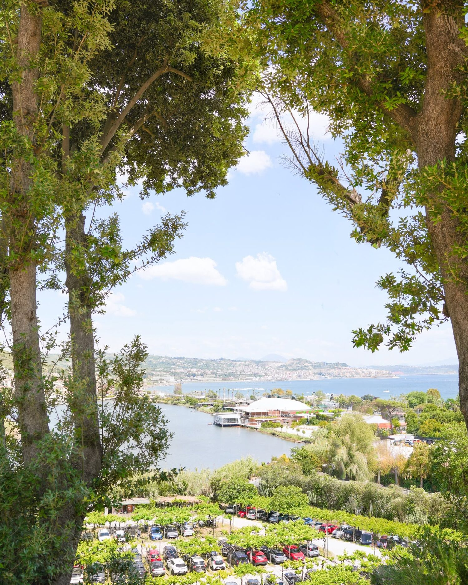
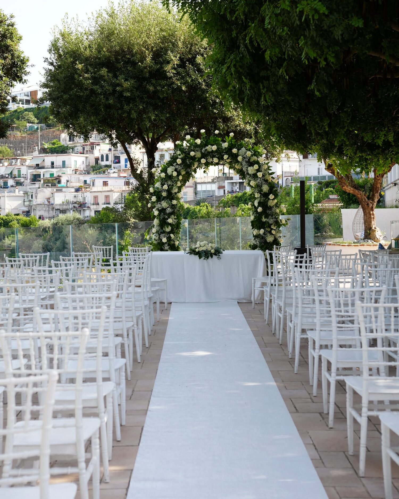
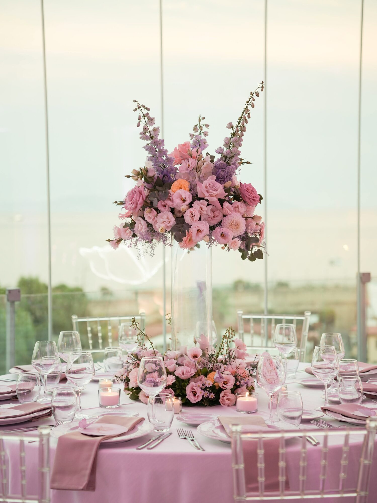
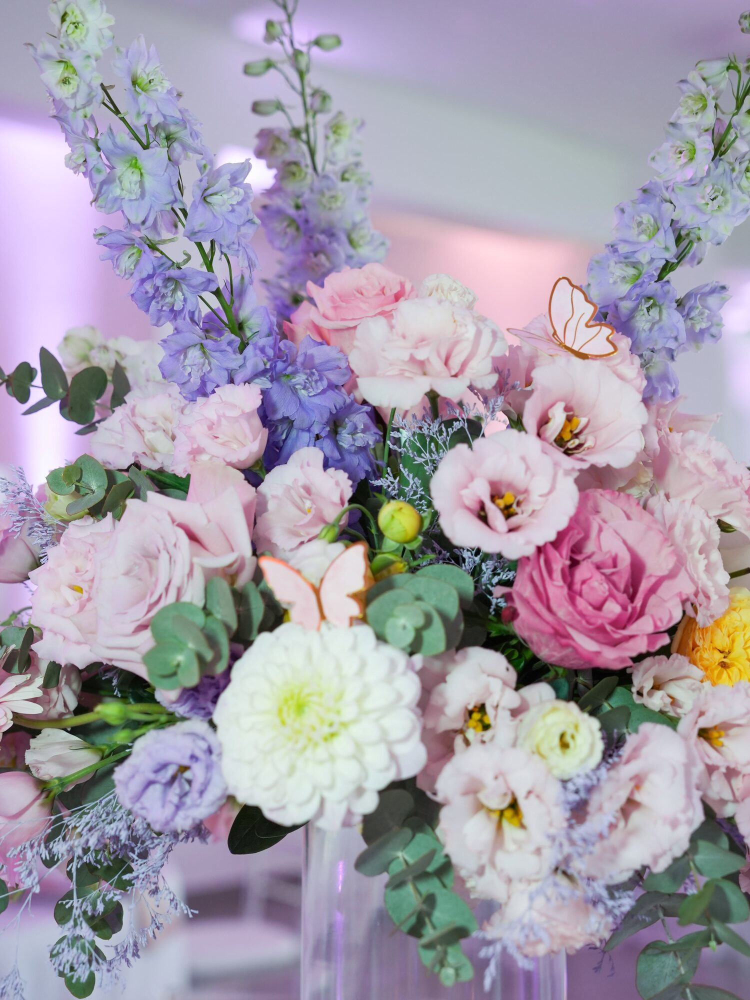
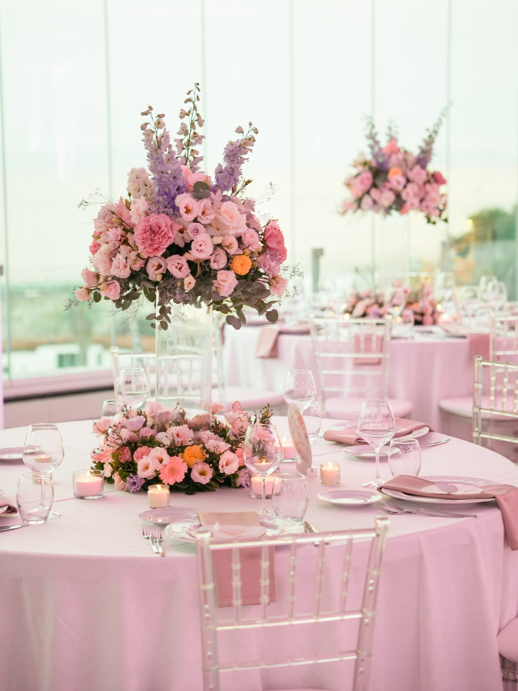

Allestimenti floreali
Composizioni eleganti di rose, ortensie, dalie ed eucalipto, dalle altezze scenografiche ai delicati segnaposto, in palette pastello o nei colori che amate.
Matrimoni · Eventi · Ristorante
Una terrazza panoramica sulla Baia di Napoli, nel cuore dei Campi Flegrei: qui ogni celebrazione diventa un ricordo indimenticabile.
La location
Affacciato sul litorale flegreo, Poggio Ruppelt racconta una storia di ospitalità che inizia nel 1930. Tra alberi secolari, luci soffuse e il profilo della Baia di Napoli all'orizzonte, è il luogo dove eleganza e natura si incontrano per dare vita a matrimoni da sogno e ricevimenti esclusivi.

Il panorama
Uno sguardo che abbraccia il mare, le colline flegree e i paesi della costa: il nostro punto panoramico è la scenografia naturale per aperitivi, taglio della torta e fotografie al tramonto.

La cerimonia
Un viale bianco tra gli ulivi conduce all'arco floreale: il giardino è pronto ad accogliere riti civili, simbolici e religiosi, con sedute chic e decorazioni studiate su misura insieme ai nostri fioristi.

Il ricevimento
Grandi vetrate sul panorama, tavoli imperiali e rotondi con mise en place raffinata, candele e composizioni di rose, dalie e delphinium: la sala si trasforma in un saloon elegante per il pranzo o la cena di nozze.
Matrimoni
Dalla richiesta di informazioni al brindisi finale: vi accompagniamo passo dopo passo con un team dedicato, perché del vostro matrimonio resti solo la bellezza del ricordo.

Composizioni eleganti di rose, ortensie, dalie ed eucalipto, dalle altezze scenografiche ai delicati segnaposto, in palette pastello o nei colori che amate.

Un referente unico segue tempi, fornitori e ogni momento della giornata: accoglienza, cerimonia, ricevimento, balli e festa serale.

Dall'aperitivo in terrazza al banchetto nuziale, fino alla torta e all'intrattenimento: ogni fase trova il suo spazio ideale dentro la struttura.
Eventi & ricorrenze
Allestimenti dolci e luminosi per accogliere i più piccoli e le loro famiglie.
Feste private con menu dedicati, tavoli tematici e angoli dessert.
Meeting, cene di gala e team building in una location fuori dall'ordinario.
Organizziamo il momento perfetto, riservato e romantico, con vista sul tramonto.
Ristorante
La nostra cucina celebra il territorio: prodotti del mare e dell'entroterra flegreo, ricette della tradizione napoletana e presentazioni curate, per tre percorsi di degustazione pensati per raccontare il gusto autentico di questa terra.
Galleria
Contatti
Compila il modulo: ti risponderemo per condividere disponibilità, possibilità di visita della location e una proposta su misura.